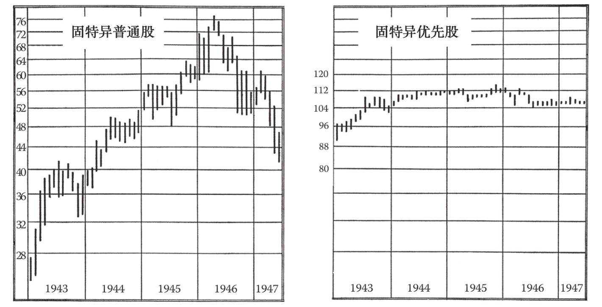
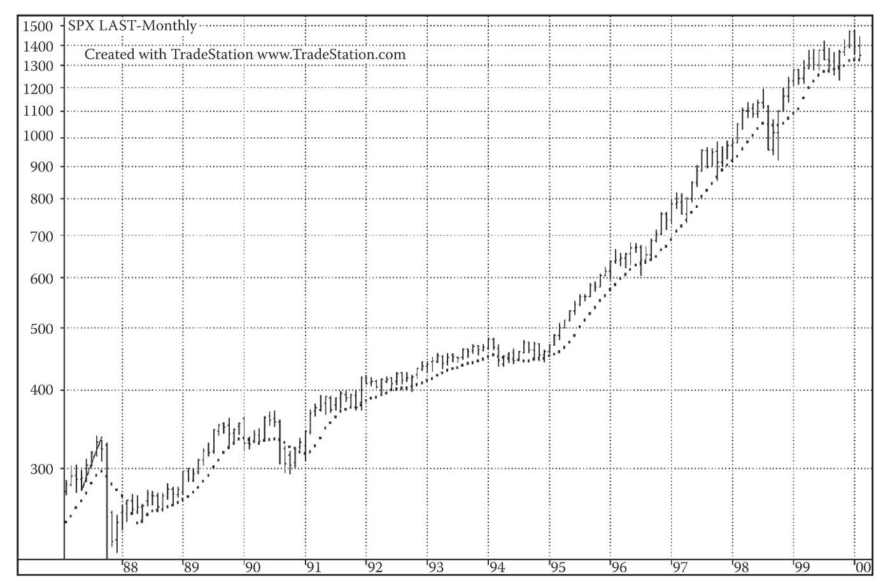
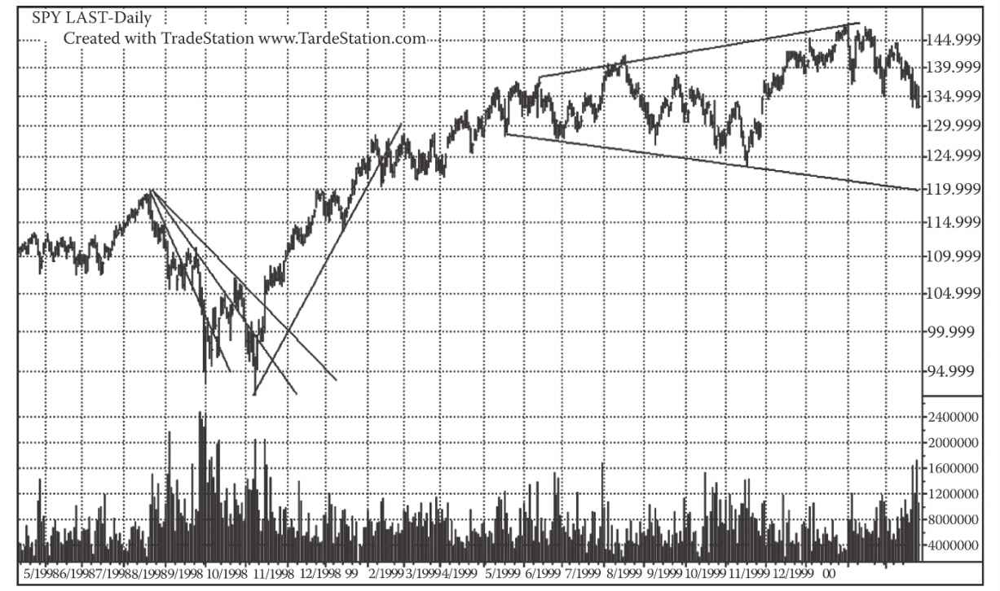
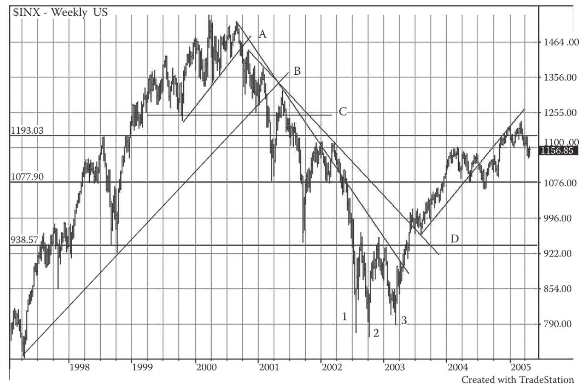

第20章 投机者青睐的股票
我们想用图表来分析的股票其实很简单，数量也很少。此类股票通过交易操作便可盈利，这意味着所选股票有足够宽的价格波动区间，从而能够为交易创造机会。还有一些投资者更注重本金的安全性以及收益的确定性，对他们来说，的确有（第9版编者按：或曾经有）一些股票稳定性较高。你可能会将大部分资金投资于这类股票。这类股票的价格波动区间较窄，可以很好地抵御股价下跌风险，但对市场的整体上涨反应不大，因而十分适合保守型投资者。但对交易操作来说，此类股票却不是首选，毕竟它们的波动很小，佣金成本会侵蚀微薄的交易利润。此外，与投机型股票的图表相比，这些股票的图表缺少陡峭、清晰的形态，走势以平缓的波动为主。（第9版编者按：这些说法较为老旧。上述股票的走势大多遵循老派的套路。如果不考虑时间（T）这个因素，这些股票的价值无从谈起。但债券是个例外，在价格停滞时，债券的实际价值只会随着通胀水平和货币购买力的变化而变化。即使是债券，其价值也需要通过本书介绍的各类工具不断进行重估。）（可通过本章图20-1～图20-4进行深入了解。）
接下来，让我们进一步阐释。假设一家公司发行两种股票：优先股和普通股。鉴于（我们假设）该公司在过去几年一直保持稳定的最低利润水平，且足够支付优先股分红，分红的持续性似乎能够保证。但优先股的分红率为固定的6%。普通股分享剩余的未分配利润。在第1年，普通股每股分红可能是0.50美元。第2年，每股分红可能升到2美元，即第1年的4倍。在这个例子中，如果不考虑其他因素，你会预计优先股的价格会保持在稳定的水平，而普通股的价格则取决于某个特定因素且有可能出现4倍的大涨。投机型股票的发行人通常具有以下特质：每年的净利润水平不稳定，业务量或利润率大幅波动。此类股票的发行人也可能已将大部分“承诺”的净利润分给了优先级较高的受益人。还有其他影响股票投机性波动的因素，有的股票对影响因素有较高的敏感度，有的则极为保守，有的股票敏感度或风险水平介于两者之间。值得注意的是，由于存在其他重要的影响因素，股票的风格未必充分反映企业自身的状况。大多数股票的“波动”都存在一定限度，你可以根据股票过去的走势确定其未来波动的程度。（第9版编者按：换句话说，就是短线看波动，长线看波动区间。）
此外，在短线交易（第9版编者按：根据迈吉理论，短线交易是指短于道氏波浪的趋势交易）中，股票的走势风格只是部分地由企业本身决定。相比杠杆较高、企业经营更稳定甚至更保守的股票，购买具有一定不确定性或利润波动的股票可能更稳妥。关于风险因素，我们将稍后介绍。
需要注意的是，卖空股票并不意味着经济衰退或市场情绪低落。卖空只能表明你认为某只股票的价格被暂时高估；或者企业盈利或分红可能在最近几年表现异常并有可能会下降；或出于某种原因，公司的估值略高。
在技术交易中，我们通常选取投机性较高的股票，即在牛市中涨幅较大、在熊市中跌幅较大的股票。投资者认为的那些可以提高股票安全性和吸引力的因素，可能在交易上毫无价值。我们可以有所保留地认为，投机性越高的股票，越符合我们交易的意图。
（编者按：在21世纪，“投机型”股票与其他类型股票的差异变得日益模糊。为了避免使用“投机”这一贬义词，我们通常将股票分为宽幅波动和窄幅波动股票，或波动性和非波动性股票。比较两只股票时，通常评估它们的贝塔值、历史波动性及统计数据。“贝塔值”和“波动性”会分别在第24章和第42章中阐述。）
（本书读者可能关心的另一个问题是长线投资者对交易型（或投资型）股票的选股。）
20.1 长线投资者青睐的股票
保守型投资观点的变迁
现实中，很少有人会像本章中所描述的保守型投资者那样进行投资——传统银行的信托部门除外。有些风险厌恶度较高的投资者也可能采取类似策略。银行这样做的原因是为了避免信托受益人的诉讼。因投资能力不足导致的诉讼也是理所当然的。信托部门的存在为受托人在诉讼中提供了法律保护（所谓审慎人原则）。基于对审慎人原则全新的理解，不少明智的信托部门和受托人现已采用指数跟踪或其他更有效的策略进行投资。一旦受托资产出现管理不善或大幅跑输市场的情况，信托受益人仍有权寻求赔偿。
“指数跟踪”是指根据几大常见指数（如标普500或道琼斯工业指数）进行组合构建，以复制或紧密跟随指数的表现。由于投资顾问或基金会收取管理费及相关费用，此类组合很难精准地跟踪指数走势。相关费率通常低于主动管理的基金，但实际上，这些收费对个人投资者并无必要。之所以没有必要，是因为即便是投资新手，现在也可以通过“股指份额”（如思柏达道琼斯工业平均指数交易所交易基金（DIAMONDS或DIA）、标准普尔存托凭证（SPDR）、标准普尔500指数交易所交易基金（SPY）以及纳斯达克100指数交易所交易基金QQQQ（QQQQ）等工具）或其他代表工具进行投资，做法与基金和投资专家并无二致。指数跟踪的本质是追随平均指数的走势，根据第15章中迈吉的检验结果，这一策略是不太可能实现或很难做到的（成本很高）。（第9版编者按：本书编辑认为，通过基金管理公司实施指数跟踪策略既不审慎，也不经济。投资者最好直接投资，并在上升趋势终止并反转时退出。相比随指数涨跌而获利和损失的“被动跟踪指数”，该策略更为明智。）

图20-1 左图为固特异公司普通股的走势（即满足优先收益权后的剩余权益），右图为该股票每股分红为5美元的优先股走势。优先股分红的确定性较高，但并不承诺持有人可以分享额外的利润。在54个月的相同期间内，可以清楚地看到两类股票的月度价格区间。普通股在这期间上涨300%以上，而优先股只上涨了25%，并在优先股投资者所能接受的最高点走平
20.2 长线投资者喜爱的股票：长线投资者的观点
本书第8版最重要的变化之一是更新了有关平均指数的内容，并指出读者现在完全可以通过类似股票的工具来交易平均指数。这是现代市场的重大革新之一。本章将会介绍投资于平均指数和其他指数的各类工具。
1993年，美国证券交易所（AMEX）推出标准普尔存托凭证（SPDR），这是基于标普500指数的单位信托投资工具，在交易所交易。美国证券交易所将这些证券称为指数基金（Index Shares），同时这个名称也代表其他一些类似的投资工具。前文提到过，大型投资者和投资基金长期以来一直交易着代表标普500指数的一篮子股票。这显然是大额资金的买卖。实际上，一些投资经理和投资基金也在为大型客户提供“被动投资”的服务，即跟踪指数的表现。
这些投资工具和其他“一篮子”股票的交易是程序化交易的一种应用。
认识到这种交易的效用后，美国证券交易所创造了标准普尔存托凭证，为小额投资者采用相同的交易策略提供了一种代理工具。通过观察普通投资者交易SPDR（SPY）的情况，我们可以看出这个新产品的有效性。截至2000年，各种SPDR的投资额已经达到150亿美元，份额已超过1亿份。这些单位投资工具让投资者可以像买卖个股一样交易标普500指数的整个组合或一篮子股票，但大大降低了交易所需的资金量。
1998年，美国证券交易所推出了DIA，即道琼斯工业平均指数（DJIA）的指数基金，这和SPDR背后的逻辑相同。投资者可以买入DJIA，因此总的来说，在现代市场中的投资者可以“买大盘”，这和当初两位作者面临的市场环境已大为不同。
20.3 指数基金和类似工具的面世
美国证券交易所单位信托投资工具复制了其基础资产的组成。举例来说，SPDR代表的是标普500指数一篮子股票价值的1/10，并且和股票一样在美国证券交易所内交易。此外，该工具还复制了股票的其他特点，包括期限长（SPDR信托单位的期限一直延伸至22世纪）和季度红利（SPDR每季度发放现金红利，与标普500指数股票累积的红利对应）。投资者甚至可以将红利用于再投资，并在正常交易时间内在美国证券交易所交易信托单位。正常情况下，SPDR的价格跟随标普500指数变化，两者偏差不大。（2008年，美国证券交易所与纽约股票交易所合并，但该工具仍保持不变。）
SPDR的这些特点是所有指数基金的共性，例如思柏达道琼斯工业平均指数交易所交易基金（DIAMONDS）、世界股票基准指数基金（World Equity Benchmarks）等。当然，投资指数基金会产生一些成本，但这往往低于直接投资于基金的成本。此外，对于独立投资者来说，指数基金也更为灵活。指数基金的优势之一就是能让投资者控制投资的税务成本，基金则做不到这一点。
其他交易所也创造了相似的证券、衍生品或期货来跟踪或复制一些著名的平均指数和指数。这其中包括指数基金、其他指数（如罗素指数和日经指数）的期货、期货期权和指数期权等各类可以用来交易、投资和对冲的工具。这其中包括一些较为著名的交易所和金融工具，例如芝加哥期货交易所（道指的期货和期权）、芝加哥商品交易所（标普500指数、日经225指数、迷你标普500指数、标普中盘股400指数、罗素2000指数和纳斯达克100指数的期货）、芝加哥期权交易所（标普100指数和标普500指数的期权）。这些只是此类投资工具的冰山一角。投资者可以在《华尔街日报》“期货价格”或“期权价格”那一页中找到所有重要的期货和期权名称。
本书并不是为了期货和期权交易而写的。我们在这里介绍这些交易所及其期货和期权产品的原因是，这些工具给投资者提供了通过指数基金和平均指数来对冲组合敞口的便利，更不用说投机的机会。
简单来说，对冲是一种保持市场中性的战略。举例来说，投资者可以在芝加哥期货交易所做多DIAMONDS，然后买入DJIA的认沽期权，这样一来，假设DJIA上涨获利，那么投资者损失的只是认沽期权的期权费。相反，假如道指下跌，那么投资者可以通过行使认沽期权获利，DIAMONDS的多头仓位则会遭受损失。这只是我们为解释对冲所采用的一个极为简化的例子。但读者应该认识到对冲是一种重要的投资策略。假如分析师认为趋势已经反转或市场情况不稳定，但又不希望产生税负或想要递延税负，那么他可以用对冲来代替清仓。
可用的投资工具概览
列出所有可供交易的平均指数、其他指数、期货和期权是一件无比艰巨的工作。这是因为，新的投资工具持续面世，而且随着现代市场飞速发展，以后的创新速度必然会更快。除了上文提到的工具，我们现在还有世界股票基准指数基金（WEBS）。投资者可以通过该投资工具控制对世界主要市场的敞口。
除了DIAMONDS和SPDR，在21世纪初，已经有至少30种指数基金工具在美国证券交易所内交易。费城和芝加哥的交易所中也有类似工具在交易，并且每天都可以看到新工具的诞生。为了降低混乱性，普通投资者应该将注意力集中在最重要的一些指数上。一个人处理的工具越多，他的投资战略和战术就越复杂。因此，对于普通投资者来说，道指、标普500指数和纳斯达克指数（DIA，SPY，QQQ）已经完全够用了。当投资者想要捕捉板块轮动、短期趋势和一时的狂热时，他就需要关注中盘股指数、日经指数和其他一些工具了。

图20-2 本图展示的是标普500指数。在图中我们可以清晰地看到长线投资的好处，当然，这也得益于美国历史上历时最长、涨幅最大的一轮牛市（出现在克林顿和戈尔执政时期）。牛市末期，在大众的狂热情绪下（美联储前任主席格林斯潘将这段时期描述为“非理性繁荣”），标普500指数出现大幅随机波动（见图20-3）。图中的虚线大致对应于150天移动平均线。单单使用移动平均线（或基本点法）作为交易的信号，投资者就可以跑赢大盘和99%的其他投资者
20.4 这些工具的重要意义：分散投资、降低风险、减少税负、技术规律等
这些新型交易工具的重要意义不可低估。首先，它们向个人投资者提供了高度分散投资的机会，而这在以前是机构投资者的专享优势。标普500指数成分股占到了纽约证券交易所上市股票总市值的69%左右。买标普指数基金，实际上就是买美国经济。道琼斯工业平均指数的30只成分股代表了美国乃至世界经济的龙头企业。投资者最好对这两个指数都给予足够的重视。
因此，买入SPDR或DIAMOND基金就意味着买入一个高度分散化的投资组合，而买入NASDAQ或QQQ基金就意味着投资于美国经济中投机性和波动性较大的领域。鉴于道指及美国经济长期向好的趋势，上述做法完全可成为长期投资者的战略与战术。不过，这并非意味着可以不假思索地盲目建仓，或对所持仓位不闻不问。正相反，即便是长线投资者，也不应让熊市毁掉流动性和权益价值。第18章对此有详细讨论。

图20-3 这张图展示了SPDR的价格及成交量走势。SPDR是一只在美国证券交易所挂牌的指数基金，与标普500指数挂钩。1998年亚洲金融危机后，该基金走出了一个逐渐扩散的扇形形态，在图上的最后阶段构筑了一个扩散顶。（第9版编者按：请注意这个扩散顶在1999～2000年被识别，随后股市大跌，具体记录可在http://www.edwards-magee.com 上找到。参见图20-4）
尽管这些工具非常有用，但我们也要牢记迈吉的告诫：市场是由众多股票组成的，而非铁板一块。这意味着，当道指和标普指数下行、个股走势方向不明时，必须谨慎对待自己的多头仓位。值得注意的是，就投资回报而言，这些工具比不上精挑细选出来的个股。例如，高通（Qualcomm）股价在1999～2000年间暴涨了约240%（暂时性地），而同期标普指数的涨幅仅有24%左右。有些人在高位买入高通股票后在低位割肉，亏损幅度高达75%左右（每股亏掉约148美元）。当时高通股票的交易者时刻提心吊胆，不断查看股价走势；相比之下，SPDR的投资者通常吃得香、睡得着，一周或更久才看一次SPDR的价格，或者干脆在电脑里设定或与券商约定：只有在价格突破趋势线或到达止损位时，才通知自己。
SPDR还有其他一些优点。持有基金可能导致一些税负，原因是基金管理人会调整组合，以反映基金参与者的变化和股东的赎回。因为Index Shares指数基金将一直存续到22世纪，所以长线投资者无须实现资本利得、缴纳税金。面对熊市时，投资者可运用其他一些工具来对冲，它们包括期货、期权、一篮子代表性的股票等，同时为这些交易纳税。

图20-4 这张图展示了标普500指数跌宕起伏的走势，简直可与画家小汉斯•荷尔拜因（Hans Holbein）的画作相媲美。图20-3上的2000年扩散顶预示着标普指数将跌至790点以下，跌幅虽未达50%，但足以引人注目。而除了那个扩散顶，在这张图上还有更多空头信号。指数在A点、B点连续击穿趋势线，然后在C点跌破“颈线”或水平线。注意B点和C点的紧密联系。读者还要谨记，在大熊市中切勿越跌越买，除非底部已经清晰呈现。这张图上，直到1-2-3处的头肩底构建完毕后，底部才清晰呈现。而即便到了那个时候，对于长线投资者而言，最安全的做法也是等到指数在D点升破头肩底颈线后再入场。所有这些在当时就能知道
在指数基金出现之前，约翰·迈吉就已敏锐地发现，从技术分析的角度看，道琼斯工业平均指数的走势相当有规律。第36章中关于道氏理论的评论为此提供了详细注解。所以从技术的角度看，指数基金投资者比个股交易者面对着更少的波动。
20.5 小结
长线投资者和中线投机者都试图捕捉长线（以及周期性的）市场趋势。他们不屑于参与成本高昂的短线频繁交易。
他们认识到，风险会随着时间及趋势而波动，短线频繁交易的受益者主要是券商。长线投资者的策略可以是：通过投资于基金、SPDR或一篮子股票，尽量与市场保持同步。但是，长线投资者并不希望参与熊市。当长线趋势由牛转熊时，他会对自己的仓位进行对冲或变现。事实上，他还能做空指数。
如果长线投资者希望跑赢大市（其实按本书所说方法操作就能自动实现这一目标），那么他会在基础资产组合以外参与一些投机性的个股。他可以始终保持对冲状态，这取决于他的风险偏好。当他做多指数时，他会做空一些处于下跌趋势中的股票。而当他做空指数时，他会做多一些处于上涨趋势中的股票。因此从长期看，拥有中等技能和适量资本的投资者没有亏钱的理由。
第5章和第28章介绍了长线投资者怎样运用迈吉的基准点法。